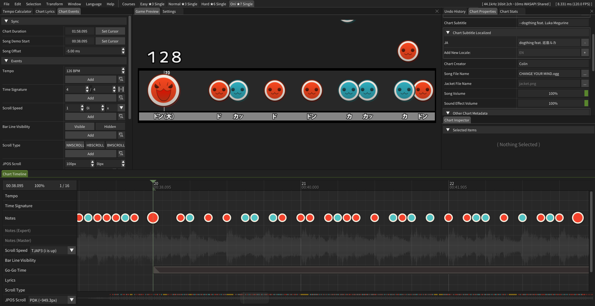

Making Songs
Chart = Beatmap/Map, they are levels that you play to a piece of music.
Check out this great guide by ugyuu on how to create your own Taiko charts: youtube.com/watch?v=U0i-z-tpxY8
Additionally, feel free to ask any chart-related questions in the TJADB Discord's #tja-general channel!
Charting Tools
PeepoDrumKit
PeepoDrumKit is the recommended tool to chart with. It features an easy to use GUI to create and edit TJA charts.
You can find the currently maintained download here: github.com/IepIweidieng/PeepoDrumKit

TJA Tools
TJA Tools is a web based tool for visualizing TJA charts.
TJA Format and Syntax Reference (tja.md)
An unofficial compilation and commentation of the TJA format & its related formats. This is the most up to date reference material featuring nearly all headers, commands, and corner case information.